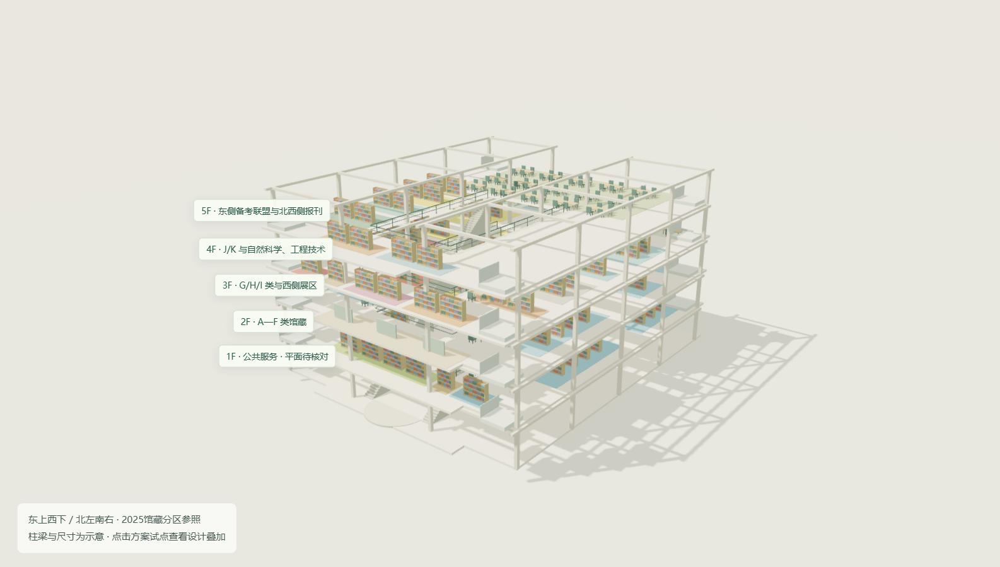

JIAGENG LIBRARY / ARCHITECTURE & SPACE
嘉庚图书馆：从湖畔走进五层空间
完整楼群 → 湖畔图书馆 → 五层剖切 → 分层试点与俯瞰
全馆方案 · 分层交互
楼群外观
图书馆外观
空间剖切
方案试点
平面俯瞰
复位视角
显示标注
整体
一楼 1F
二楼 2F
三楼 3F
四楼 4F
五楼 5F
A 固定静音
B 可转换
C 特色馆藏
D 预约研讨
主三图书馆 · 东上西下 / 北左南右
2025版馆藏分区参照 · 柱梁与尺寸为示意
拖动旋转 · 滚轮缩放 · 右键拖动平移

当前设备无法启用三维渲染，可查看效果图或用 Edge / Chrome 打开。
常态阅读布局
桌组分散布置；固定静音区持续保护；中庭与主通道保持连通。